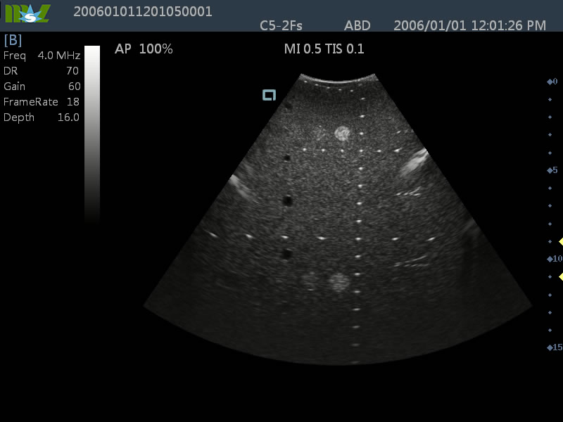
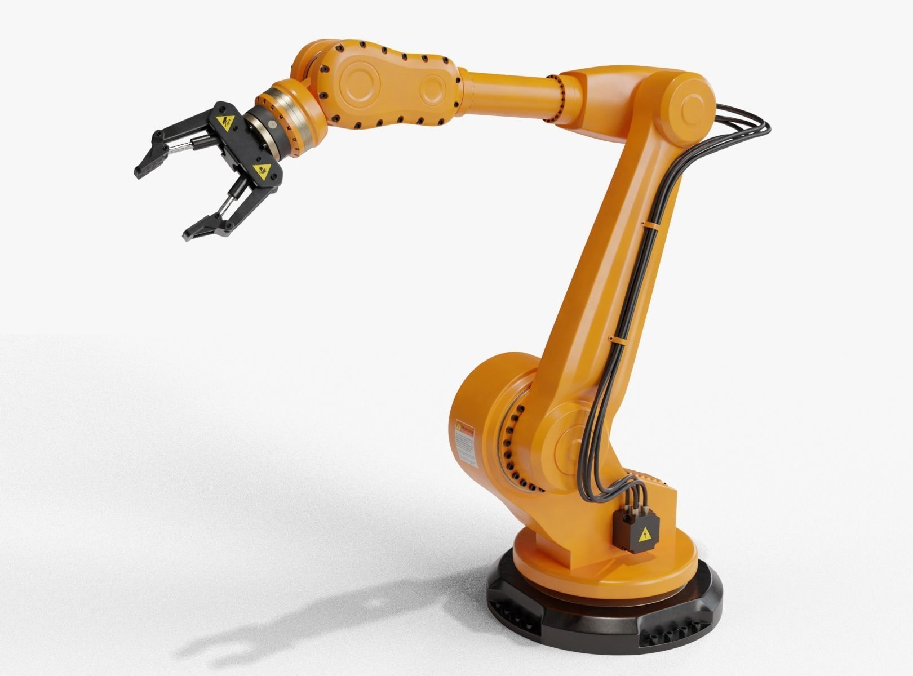

This project combines InceptionV3 and U-Net to improve recyclable material detection. InceptionV3 extracts image features, while U-Net focuses on material segmentation. Together, they offer precise classification, crucial for automating recycling. This approach demonstrates an innovative use of AI in enhancing environmental sustainability.

This project presents a Python-based analysis of algorithmic time and space complexities using Big O notation. It compares the computational efficiency of various algorithms, providing insights for optimal algorithm selection and software optimization.

This project employs Recurrent Neural Networks (RNN) to forecast stock market prices, showcasing the application of advanced machine learning techniques for predictive analysis in finance.

The Generative Adversarial Network (GAN) project represents a sophisticated exploration into image, text, and video generation using advanced deep learning technologies, utilizing TensorFlow and Keras frameworks.

Ultrasound Image Processing in MATLAB: Advancing Diagnostic Precision" involves the application of MATLAB for enhancing the quality and interpretability of real ultrasound images. Through sophisticated image processing techniques, this project aims to improve diagnostic accuracy, enabling clearer visualization of anatomical structures and potential abnormalities.

The "Display Features and MaxPooling" project focuses on visualizing the features extracted by convolutional neural networks (CNNs) and the impact of max pooling on these features

This project involves the comprehensive analysis of robotic models using MATLAB, focusing on evaluating their degrees of freedom and performing both forward and inverse kinematics calculations. By leveraging MATLAB's robust computational capabilities, the project precisely determines the movement capabilities of various robotic structures and computes their positional and orientational configurations.